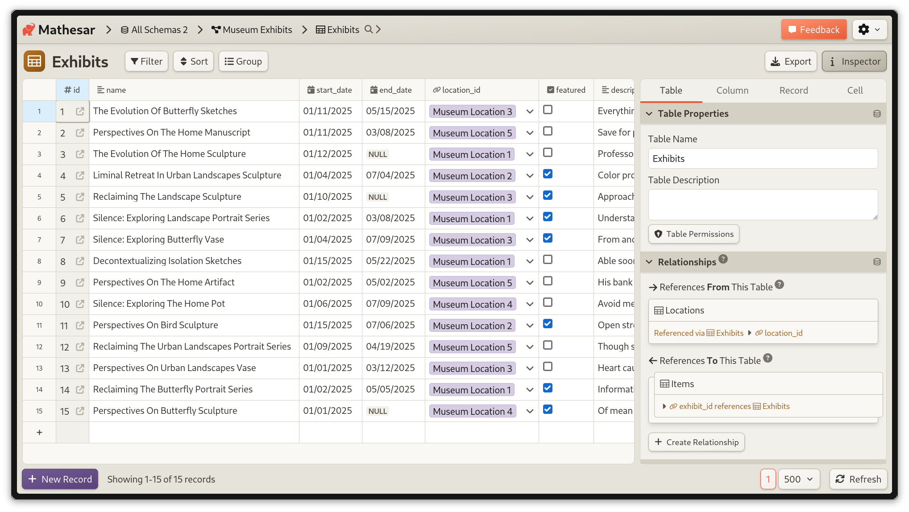
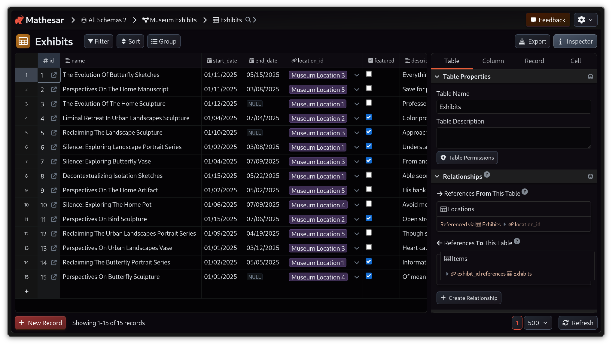
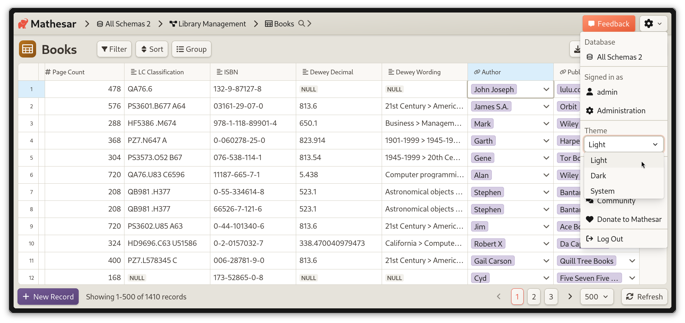

Mathesar 0.3.0¶
Need forms, SSO, or files in Mathesar? We’d love to talk to you!
We’re actively working on all three this summer, and would love to learn more about your use case so that we can make sure we’re building the right features. We’re offering a $25 gift card as a thank you for scheduling 20 min with us.
Summary¶
Mathesar 0.3.0 focuses on improvements to Mathesar’s installation experience, look-and-feel, usability, and stability. Highlights include a new dark mode theme, a UI refresh in light mode and a new install method using a one-line script. We’ve also improved usability of the Data Explorer, finding table records, and creating records. The release includes several other smaller fixes and improvements.
This page provides a comprehensive list of all changes in the release.
Improvements¶
A new look for Mathesar¶
We’ve updated Mathesar’s visual style to improve readability and contrast, move towards design consistency, support future ability to theme Mathesar, and better integrate with the new https://mathesar.org/.

A preview of the table page in Mathesar’s new Light theme
As part of our new look, we’ve also introduced a dark mode theme for users who prefer using dark backgrounds to reduce eye strain for extended use.

A preview of the table page in Mathesar’s new Dark theme
By default, Mathesar will respect your “system” color theme. You can switch to explicitly using light or dark mode via a new toggle in the header menu:

Related work: #4380 #4483 #4439 #4407 #4477 #4442
Updated “from scratch” installation workflow¶
We’ve streamlined Mathesar’s “from scratch” installation using uv, which eliminates several steps from the process. This simplifies setup for users who want to use Mathesar without Docker. You can see the updated installation instructions here.
Related work: #4399 #4533 #4503 #4508 #4540 #4448
Browsing records in the record selector¶
Previously, Mathesar’s “record selector” only displayed the first 10 rows of a table, and relied primarily on the search interface. We now support pagination and displaying up to 100 rows per page, which makes it much easier to browse all available records.

Data Explorer usability improvements¶
We’ve eliminated the distinction between viewing and editing explorations, instead moving to a single page that allows you to do both. We also now save column width changes made while viewing explorations.
We’ve made a few other minor usability improvements such as improving headings, using a dynamic “Inspector” button that indicates when the inspector is open, improved display of help text.
We have also removed “undo” / “redo” functionality within the data explorer to prepare for future improvements.
Related work: #4453 #4440 #4446 #4460
Pasting into Mathesar now works with draft rows¶
Previously, pasting into Mathesar tables only worked for rows that had already been saved to PostgreSQL. Now you can create draft rows and paste into them.
Related work: #4505
Set up security policy¶
We’ve added an initial security policy for Mathesar in line with best practices from other open source projects. Our aim was to use GitHub security features and improve our workflow around users reporting potential vulnerabilities.
Related work: #4548
New help text for time zone DB option¶
We’ve improved our in-app explanation of how Postgres WITH TIME ZONE behavior works for users who may not be familiar with it.
Related work: #4476
Bug Fixes¶
- Fix issue where
NOT NULLconstraints could only be set in thepublicschema #4531 - Fix localization not being available during Mathesar setup #4449
- Fix issue with some external links not showing the external link icon #4450
- Fix UUID-based foreign keys showing the value directly in filters instead of showing the record selector #4491
- Fix issue where a text data type column could not be changed to money data type #4415
Maintenance¶
- Lay the groundwork for the refactor of altering database columns #4499
- Frontend preparation work for future backend casting performance improvements #4426
- Work related to our internal workflows #4438 #4444 #4447 #4451 #4452 #4471 #4472 #4478 #4487 #4497 #4498 #4537 #4539
Upgrading to 0.3.0¶
For installations using Docker Compose¶
If you have a Docker compose installation, run the command below:
Your installation directory may be different
You may need to change /etc/mathesar/ in the command above if you chose to install Mathesar to a different directory.
For direct installations of Mathesar on Linux, macOS, or WSL¶
Starting with Mathesar 0.3.0, we provide an install script that automates both fresh installs and upgrades for standalone (non-Docker) installations.
Previously referred to as “Installation from scratch”
In versions earlier than 0.3.0, this setup was referred to as “Installation from scratch”
Follow the steps below to upgrade Mathesar:
-
Enter your installation directory into the box below and press Enter to personalize this guide:
- Do not include a trailing slash.
- Do not use any variables like
$HOME.
-
Go to your Mathesar installation directory.
Note
Your installation directory may be different from above if you used a different directory when installing Mathesar.
-
Download and run the install script for 0.3.0
-
Replace your gunicorn systemd service with a Mathesar systemd service
-
Disable and stop the existing gunicorn service
-
Follow the steps in Run Mathesar as a systemd service from the installation guide
-
Remove the gunicorn service file
-
-
Update your Caddyfile
-
Use the configuration shown in Install and configure Caddy in the installation guide, and update your Caddyfile accordingly
-
Ensure that your domains are specified directly in the first line of the Caddyfile
-
Restart your Caddy service
-